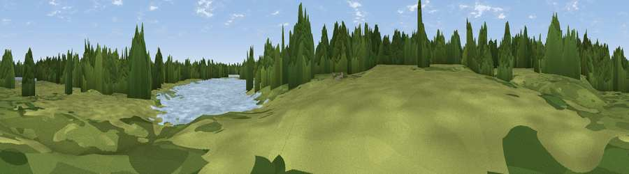

Viewpoint near Calmore
#45234 in England · top 90% of its area beats it · near Calmore · access?Where it is
The exact computed spot (SU 34505 15650). Click the marker for map links.
Public access: no public right of way or access land is recorded at this exact spot — it may be on private land. Computed from Natural England's CRoW access layer and OpenStreetMap rights of way — not the legal definitive map. Always verify locally.
The view, rendered

A 360° render of this exact spot computed from the terrain model, tree cover and land cover — summer colours, afternoon light, calibrated against photographs of famous viewpoints. Real trees, hedges and buildings will differ in detail.
The panorama
Grey silhouette: terrain skyline in each direction (720 bearings, Earth curvature and refraction included). Dashed green: skyline with trees (+15 m) and buildings (+8 m) as obstacles. Blue strip: how far the ground is visible on each bearing.
Where the view opens
Wedge length = distance to the farthest visible ground on that bearing (vegetation-aware). Rings at 10, 25 and 50 km.
What fills the view
38% woodland · 30% grassland · 22% water · 8% built-up · 2% cropland
Angular shares of the visible panorama (visual magnitude), not map area. Landscape diversity 0.58 (0–1 Shannon).
Key numbers
More beautiful places nearby
The staircase of upgrades: each row has a higher view potential than everything closer. Driving times are estimates from straight-line distance, calibrated against real road routing — check an actual route before setting out.
| Place | Direction | Drive | Score |
|---|---|---|---|
| Wade Hill | NNW · 1 km | ~3 min | 16.9 |
| Viewpoint near Calmore | SW · 2 km | ~5 min | 26.3 |
| Viewpoint near Upton | NE · 5 km | ~11 min | 30.6 |
| Viewpoint near Bramshaw | W · 8 km | ~17 min | 35.1 |
| East Dean Hill | NNW · 12 km | ~23 min | 46.2 |
| Viewpoint near West Dean | NW · 13 km | ~24 min | 52.7 |
| Viewpoint near King's Somborne | NNE · 14 km | ~26 min | 60.8 |
| Viewpoint near Stockbridge | N · 20 km | ~34 min | 63.3 |
50.93926, -1.51029 · source: osm viewpoint · position refined by local search. Computed location — check access rights before visiting.